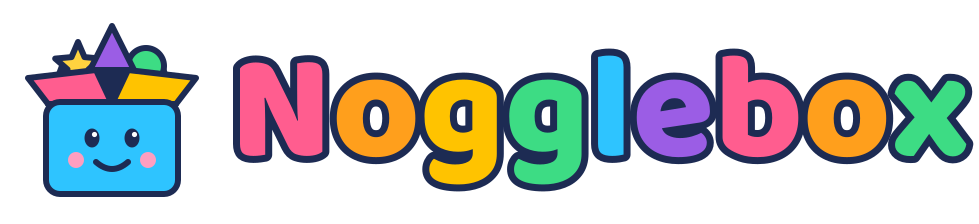

That's ok. Tap an arrow to keep going.

Watch, tap, and play!
is an educational variety app for all preschool and elementary school kids: a free, ever-growing collection of short videos and interactives that teach while they entertain.
Load it in a browser on a tablet or other touchscreen device, full screen the page, and let a child explore on their own. The forward arrow brings something new at random, and the back arrow revisits what came before.
Most browsers let you add Nogglebox to the homescreen as well, so it can be launched with a single tap.
Nogglebox will never advertise to your kid and will never track what they do.
We aim to create a massive and diverse collection of content, so we welcome contributions. If you'd like to contribute, everything you need to build one is on our GitHub repository. Contributions are reviewed for suitability and accepted or rejected without comment.